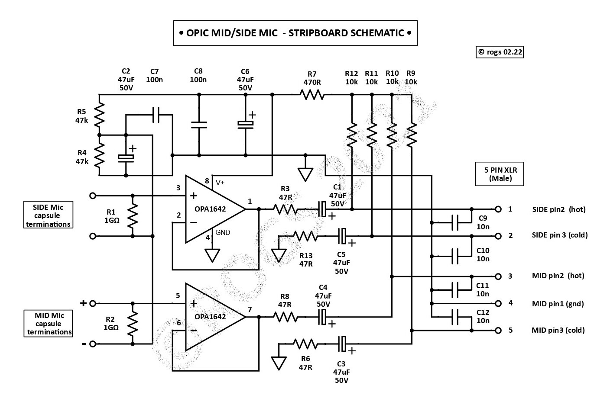

• Just click on the image below for a PDF of the project details •

The schematic above shows the circuitry required to interface 3 x 'FETless' electret microphone capsules with a microphone pre-amplifier, to provide a 'Mid/Side' style stereo microphone in a single BM800 style enclosure
The microphone is used in conjunction with a 2 channel microphone preamplifer, which must include the capability of supplying 48v phantom power to the circuitry.
This 'Mid/Side' application uses a OPA1642 dual op-amp, with each of the amplifiers providing a separate audio output for both the MID and SIDE channels. Each channel includes only 2 resistors in each signal path. This helps to minimise any noise generated by the circuitry, and should allow for a microphone with a self noise level of <10dB to be created.
As the application here uses FETless electret capsules, there is no need to generate any polarisation voltage to bias the capsules.
( Alternatively, you may prefer to build an M/S mic using a PCB rather than stripboard...Hobby microphone builder Mic Scharf has developed a PCB for this version of the project,
which you can obtain from
HERE )